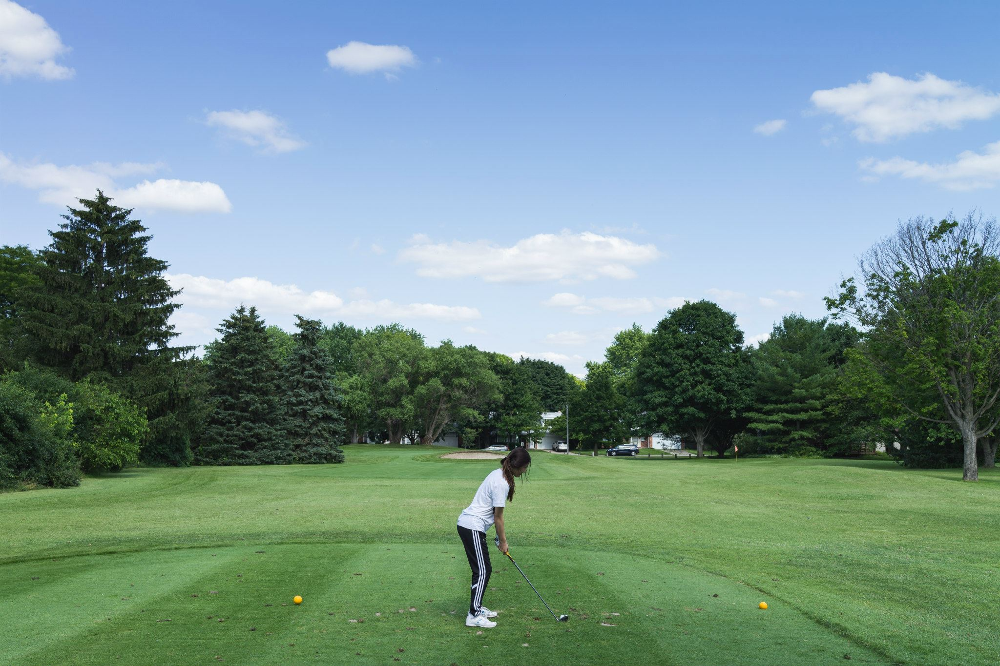

UX Designer, Allergic to Chai Tea

Before attending UMSI, I was a pre-med student pursuing psychiatry. I became a medical scribe to learn more about healthcare but ironically, while struggling with the electronic health record on the job, I saw how important good UX is and have fell in love with the field since! While my career goals have changed, my purpose has remained the same: improve the lives of others. My greatest strength as a designer is that I genuinely care about the people I serve and the users are my highest priority. My design process is iterative and I aim to produce deliverables that are intuitive, meaningful, & persuasive with measurable impact on my community.
I like adventure!

Fun fact: I used to play golf competitively!

I like fiction.